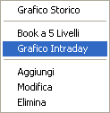
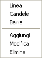

Il Grafico Intraday viene aperto mediante il menù che si apre con il tasto destro del mouse all'interno della finestra Stock Watch.

La finestra è divisa in zone ciascuna delle quale è in grado di visualizzare uno o più grafici o indicatori. Le impostazioni predefinite visualizzano il grafico del prezzo nella parte superiore e il volume di scambi nella parte inferiore.
Per cambiare il titolo visualizzato, trascinare la riga del nuovo titolo dalla finestra del Tabellone Prezzi a lasciarla sul grafico.
Cliccando con il tasto destro del mouse sul grafico si apre un menù dal quale è possibile selezionare il modo di visualizzazione del grafico e degli indicatori di analisi tecnica.

Eclipse Trader memorizza i dati per la costruzione dei grafici intraday man mano che vengono letti dal fornitore selezionato e solo per i titoli inseriti nel Tabellone Prezzi. La barra degli strumenti consente di aggiornare il grafico effettuando il backfill dei dati, se il provider supporta questa funzionalità.